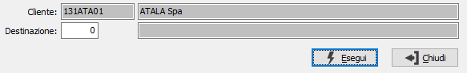
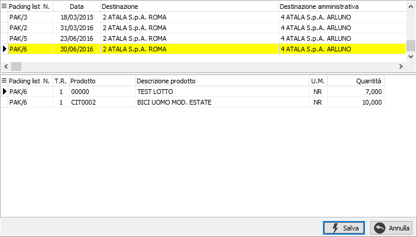
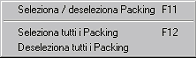

Evasione packing list
L'evasione del packing list da parte dei documenti come Ddt e fatture ha come filtro sempre il codice del cliente.
Se per lo stesso cliente sono stati inseriti più packing con destinazioni diverse viene visualizzata una finestra che permette all'utente di specificare quali di questi packing utilizzare per la selezione.

In questa finestra è possibile specificare una singola destinazione da utilizzare per selezionare i packing del cliente. Dopo aver inserito i criteri necessari e premuto il pulsante Esegui, i packing selezionati vengono visualizzati nella finestra di selezione.
Nel caso in cui esistano packing da evadere per il cliente tutti con la stessa destinazione viene direttamente richiamata la finestra di selezione.

La finestra è suddivisa in due sezioni. Nella sezione superiore sono presenti i riferimenti ai packing da evadere. Selezionando un elemento in questa sezione è possibile scegliere quali packing inserire nel documento. Spostandosi tramite il mouse o con le frecce, nella parte sottostante vengono visualizzati i dettagli delle righe relative.
Per selezionare oppure annullare la selezione di un rigo è sufficiente fare doppio clic con il mouse sul packing interessato (se selezionato verrà annullata la

selezione altrimenti il contrario). È anche possibile utilizzare il menù indicato a lato (attivato tramite la pressione del tasto destro del mouse) oppure utilizzare gli appositi tasti funzione. È consentito selezionare o deselezionare un solo packing oppure tutti i packing presenti nella selezione.La pressione sul pulsante Salva determina l'inserimento dei dati selezionati nel documento.